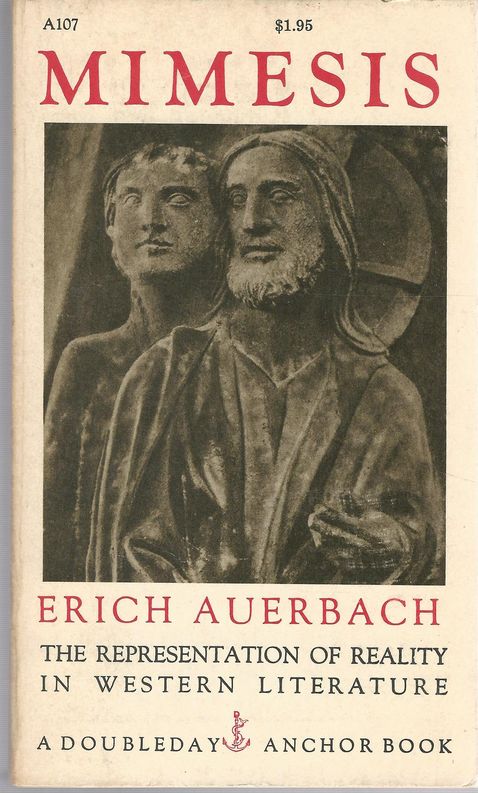

A couple of weeks ago I was in London. Even though I am trying to switch to all digital for my reading, I can't visit London without stopping in at Foyle's, Waterstones, and some boutique bookstores. And I can't make it out without buying something that is printed. While I was in Waterstones I noticed a table with smaller books on it, along with a sign saying "Pocket Perfection."
And it reminded me of the fact that years ago, you could get almost any book in the mass market format. When I was in graduate school, I had a paperback copy of Erich Auerbach's Mimesis, which is a history of how reality is represented in European literature. (You should read it.) My paperback was the one on Princeton University Press. I think I got it because it was assigned in a class and it was the edition that the bookstore had ordered. It was in what was called "Trade Paperback" format, measuring perhaps some nine inches tall and six inches wide. It was a hefty book. A lot of pages, and with a few more books of that size, one's backpack would be heavy and pretty full. But one day I was browsing around in a used bookstore, and, amazingly, found this serious tome in a much smaller package. I was surprised. I had a lot of Penguins, Anchor Books, Tor, etc., in mass market size (typically 6.75" x 4.25"), but hadn't really seen a lot of academic books in that size. I decided to look more seriously at the shelves at the good secondhand bookstores, and it seems that in the 1960s, you could get pretty much any serious book in mass market size. As you can see, this version of Mimesis was published by Anchor Books.  Anchor was founded in 1953, and the "goal was to make inexpensive editions of modern classics widely available to college students and the adult public."
This was great, because you could get more into your backpack. You might even be able to squeeze a copy into your actual pocket. And they were cheaper. And used less paper, so less hard on the environment. To be sure, the paper was cheaper quality. But many of the mass market paperback versions of academic texts had the same pagination -- so you could quote from a book and your citations would still make sense to someone who owned the hardcover.
I don't know if I could still read the reduced print of a mass market paperback, but I'd sure like to have the option.
Every now and then you see an article (example; another) about the demise of the mass market paperback, but rarely from what I can tell about the loss of this entire category: The easy-to-carry more academic book. Why is it gone? Well, publishers can charge more for a trade-sized paperback. Perhaps students in the college marketplace for these more serious books can afford more nowadays.
I think it's a loss. As I reflect on the many articles recently that talk about one's ability to (possibly) read more deeply with a paper book compared to a screen, I wonder if readers are missing out without this smaller, more portable, cheaper, cognitively sound, and more environmentally-friendly format.